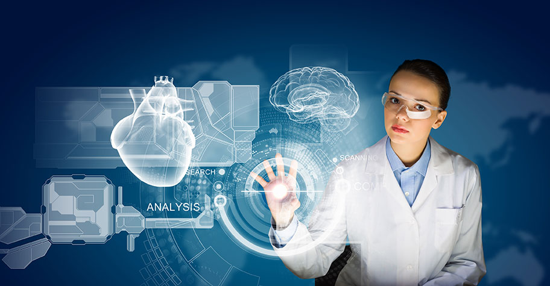
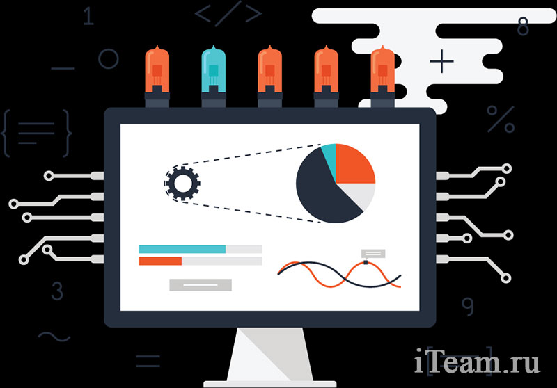
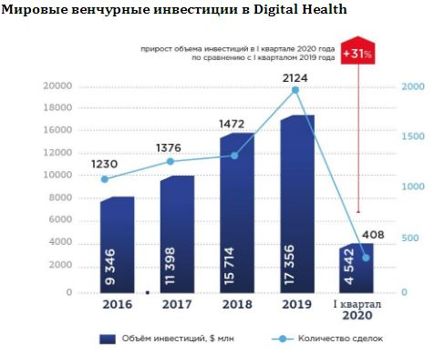
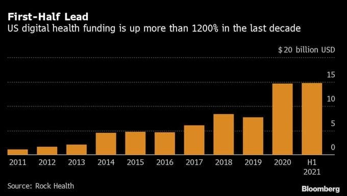
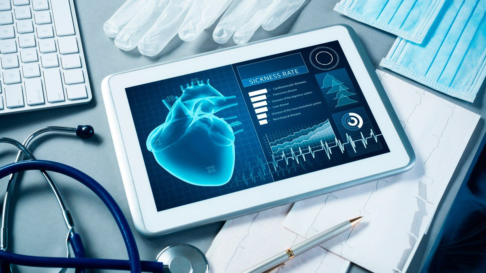
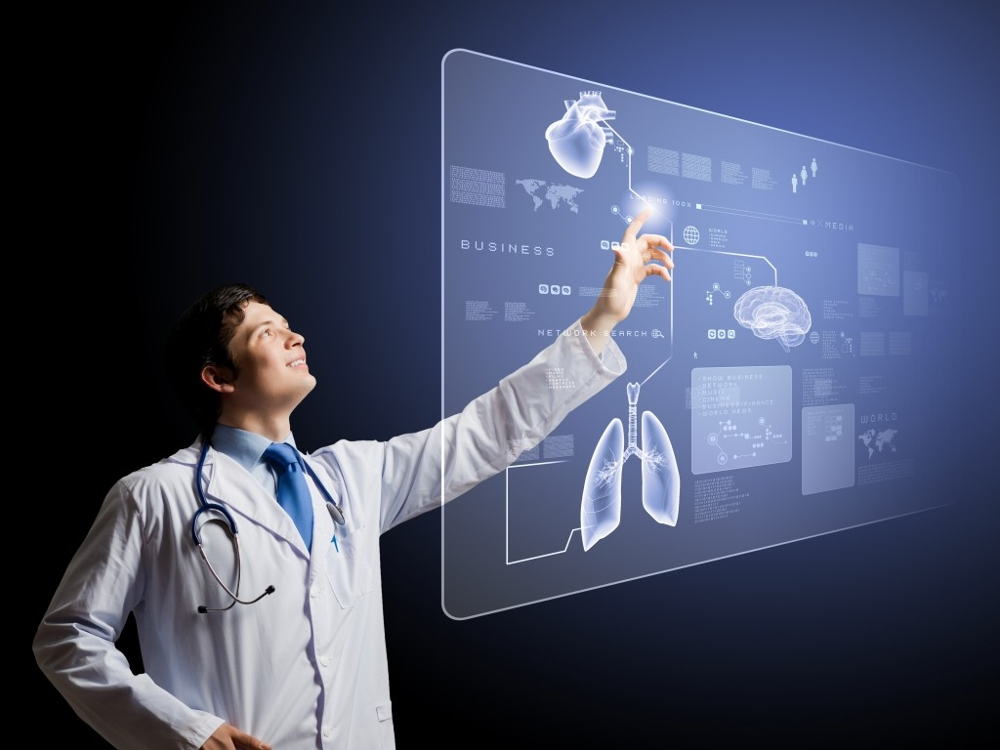
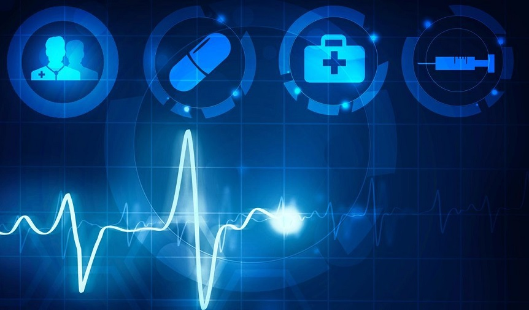
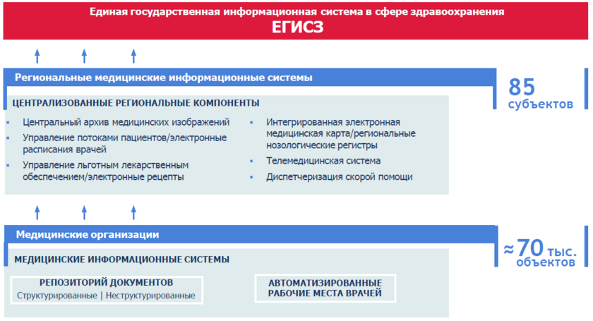
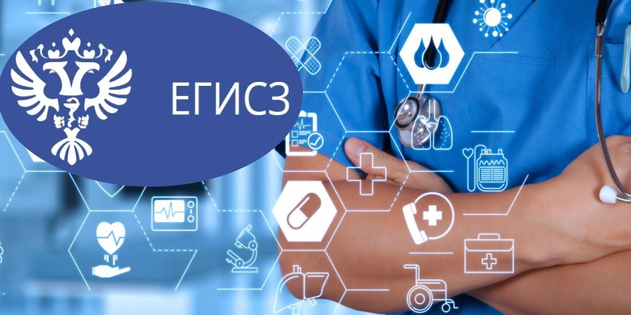
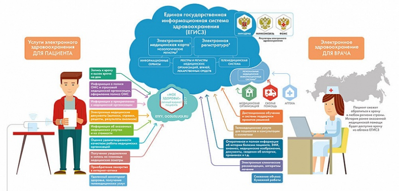

Мир новых технологий

Мир новых технологий
Внедрение электронных карт, системы выписки электронных рецептов, программ для сбора пациентского анамнеза и других технологий облегчило работу двух третей медиков, свидетельствуют результаты опроса. Тем не менее треть докторов все еще скептически относятся к технологиям — прежде всего из-за необходимости тратить время на освоение азов работы с ними.
В программе «Цифровая экономика», утверждённой распоряжением Правительства Российской Федерации от 28 июля 2017 года №1632-р, нейротехнологии и искусственный интеллект определены в качестве одного из приоритетных направлений.
Повышение качества медицины в значительной мере достигается за счёт использования современных методов и средств диагностики, характеризующихся, в свою очередь, резким возрастанием объёма формируемых медицинских данных. Подобные массивы информации уже не могут быть обработаны вручную, а предполагают использование автоматизированных систем, в полной мере реализующих требования по оперативности, непрерывности и универсальности предоставления медицинских услуг, а также по независимости качества услуг от местонахождения пациента.
  В конце августа 2020 года крупные компании, работающие в области медицинских технологий, в том числе Philips, Google и HP, присоединились к новой инициативе организации Consumer Technology Association, чтобы разработать стандарты цифровой медицины. Проект должен дать четкие определения и установить понятную терминологию, которую можно будет использовать для описания цифровой медицины. Кроме того, инициатива будет включать обучение потребителей.
Специалисты отмечают, что возможности этой сферы почти безграничны, но для дальнейшего развития экспертам необходимо определить и задокументировать общие понятия и язык, на котором они смогут в дальнейшем обсуждать свои инновации.
  В рамках выполнения государственной программы «Развитие здравоохранения» с 2018 года реализуется федеральный проект «Создание единого цифрового контура в здравоохранении на основе единой государственной информационной системы здравоохранения (ЕГИСЗ)».
Электронное здравоохранение предполагает перевод в цифровой формат и объединение в единую базу значительной части информации о пациенте и ходе его лечения (историю обращений за медицинской помощью, данные с носимых устройств и гаджетов), а также электронный документооборот, оценку качества медицинских услуг, дистанционное образование и продажу лекарств и оборудования, телемедицину. Цифровое здравоохранение включает в себя все перечисленные меры плюс введение аналитических и математических методов обработки данных, в том числе для помощи в принятии врачебных решений.
  